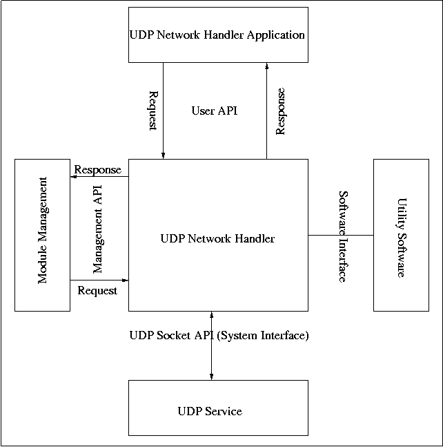
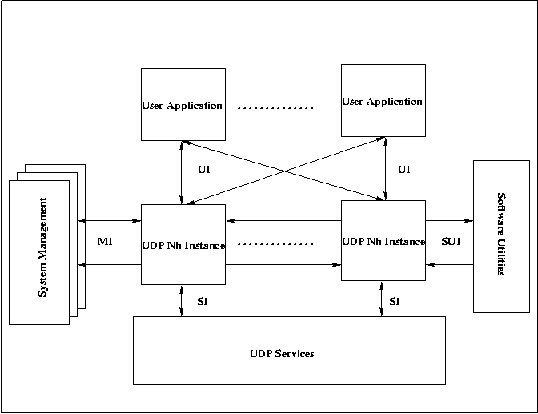

Generic UDP Network Handler Software Requirements Specifications Document
| Document id |
:
|
ITS-SRS-CDSU_NHUDP-001 |
| Document name |
:
|
Generic UDP Network Handler Software Requirements Specifications Document |
| Author(s) |
:
|
Vijaya Kumar |
| Contributor(s) |
:
|
Prakash R, Seema Jain, Sumit Bijwe. |
| Approved By |
:
|
Prakash R. |
| Document Source |
:
|
Softswitch and Media Gateway BU, C-DOT, Bangalore |
| Copyright © 2004 by C-DOT. All rights reserved. Contents of
publication may not be reproduced in any form without permission from
C-DOT. |
Revision Chart
| Document History |
| Version No |
Revised By |
Released On |
Approved By |
Remarks |
| Draft 1 |
Vijaya Kumar |
Mar 17, 2004 |
Prakash R |
|
| Draft 2 |
Vijaya Kumar |
Apr 13, 2004 |
Prakash R |
|
|
|
|
|
|
|
|
|
|
|
|
|
|
|
|
|
|
|
|
|
Table of Contents
1. Introduction
The purpose of this document is to capture the functional, performance,
operational and interface requirements of a generic UDP Network Handler
for the Internet Telephony System. The module needs to be built such that
it can be used with all stacks such as H.323, SIP, Meagaco or any other
module.
The reader is assumed to be familiar with the UDP and the related document
in the references. Here only the specifications are given. The Architecture
and detail document will be available later.
This document gives requirement specification for generic UDP Network Handler
to be built. UDP Network Handler will give functionality like opening UDP
port, sending data over UDP port, receiving data over UDP port, closing UDP
port etc.
Objective of UDP network handler is to remove complexity in UDP socket
operation by giving good API.
Since UDP Network Handler provides callback function interface to users,
aynchrnous operation on UDP socket can be handled very easily .
Abbreviations
| ACK |
: |
Acknowledgement |
| API |
: |
Application Programming Interface |
| MI |
: |
Management Interface |
| NH |
: |
Network Handler |
| SI |
: |
System Interface |
| SRS |
: |
Software Requirement Specifications |
| SUI |
: |
Software Utilities Interface |
| TCP |
: |
Transport Control Protocol |
| TBD |
: |
To Be Done |
| UDP |
: |
User Datagram Protocol |
| UI |
: |
User Layer Interface |
Definitions
| System Management |
System Management is responsible for creating, configuring,
deleting of UDP Network Handler instance.
|
| Transport Address |
Ip address and port number together makes Transport Address.
In case of UDP Ip address and UDP port number together makes UDP Transport Address.
|
| UDP Network Handler |
The UDP Netwok Handler offers the basic UDP network services like
open UDP port, send data over UDP port, receive data over UDP port,
removing UDP port etc. |
| UDP Network Handler Instance Id |
It is the unique identity of newly created UDP Network Handler.
|
| UDP Port |
This is an abstraction for the UDP socket over which data can be
sent,received.
|
| User Layer |
User Layer is the customer of UDP Network Handler which avails the
services offered by it.
|
| Fixed Local Transport Address Standard Port |
If user wants Server UDP Port then he has to fix the local port number and port number should be given
by user(standard port no).
|
| Fixed Local Transport Address Ehpermal Port |
If user wants to send data to remote and wants reply back over UDP Port then he has to fix the local port
number but he need not fix port number. He can mention port number 0, then system will asign free port number.
|
| Fixed Destination Transport Address |
If user wants to send and receive data from only one remote UDP Port then he can fix the Destination
Transpor address.
|
| [TCP/IP] |
: |
Unix Network Programming Volume 1 by W.Rechard Stevens |
The overview of the document is as follows.
Section 2 gives a general description of the UDP network handler module
implementation that should be developed. It gives the module perspective,
module functions,capabilities which are supported and will be supported
in the future, user characteristics, constraints, assumptions and dependencies of the module being
developed.
Section 3 gives system specific requirements of the UDP network handler module
implementation. It gives the specific requirements, external interface
requirements, performance requirements, functions, design constraints,
standards compliance, attributes and any other requirements to be supported.
2. General Description
2.1 Module Perspective
System Context of the UDP Network Handler is given in the
following figure. Each of the interfaces are explained in next sub section of
this section.

System Management can create multiple instances of UDP Network handler
isntances, as many as he required . User can use any of the instances of UDP
Network Handler. There can be multiple System management, multiple User also.
Then overall system context of UDP Network handler Module looks as in the
following figure.

In single process there can be maximum 128 instances of UDP Network Handler.
Maximum no of UDP Port that supported by each instances should be configurable
by System Management. These requirement can arise in certain cases like in load
conditions, to have separate network handlers for self opened UDP Port. This
gives the feature of load sharing. Each instances can be implemented as thread.
Each UDP network handler instance must support following functions to user.
- Opening an UDP port.
While opening UDP Port user can fix Local Transport Address or Destination Transport Address or both.
If user wants to recieve data over UDP Port then he has to fix local transport address.
There are two type of fixing local transport address.
- Standard Port.
- Ephemeral Port.
In the case of Standard Port user has to mention the nozero +ve port no. But in the case of Ephemeral Port he has to mention port number 0. Then UDP Network Handler Module will assign free port number. If user wants Server UDP Port then first case is suitable. If user wants client UDP Port but he wants reply over that UDP port then second option is suitable.
If user want to open UDP port which receives or sends data to only one reomte UDP Port, then he can fix remote UDP Port transport address. This will speed the operaton of sending data. Note that there is no Ephemeral Port number in this case.
Note: User can send data without opening UDP Port, if he wants client UDP Port and doesn't expect any reply.
- registering callback functions.
- Sending data over UDP port.
- Receiving data over UDP prot.
- Module should allow user to give opaque data with send data request.
Module is not going to do anything with opaque data, but it should be returned in data transmission response. It is upto user to make use of it.
- Closing opened UDP port.
Module Should support following functions to System Management.
- Creating Instances of UDP Network Handler.
- Removing created instances of UDP Network Handler.
- Terminating UDP Network Handler Instance.
- Registering callback functions.
- Performing control operation like creating, deleting, starting,
stoping instances of UDP Network Handler.
- Configuring instances of UDP Network Handler.
- Getting Status report of UDP Network Handler.
- Getting Statistics report of UDP Network Handler.
Response for all above operation and asynchronous event(e.g data arrive) should be notified to
user and management through callback functions.
Lots of modules in the Internet Telephony System uses network services
to interact with each other. In a case of IP-IP call, we need to establish the
connections between end points and to communicate on established connections.
The lowest essential block in such modules provides the transport mechanism.
It offers all network services which upper layers requires to communicate across.
UDP network handler is a midleware between UDP services and user.
It makes use of UDP services provided by Operating System. UDP API provides
following functions.
- socket
- bind
- connect
- close
The main purpose of the UDP network handler is to transport packets
over IP network by managing multiple UDP ports.
It needs to offer the general services like
- Opening UDP Port.
There can be 3 type of opening UDP Port.
- Only local transport address is fixed.
- Only remote transport address is fixed.
- Both local an remote transport address are fixed.
There can be two type of fixed transport address. This is valid for only local
transport address fixed.
- Fixed Transport address where port no is standard.
- Fixed Transport address where port no is ephemeral.
- Registering Call back functions for each UDP Port.
- Sending data over UDP port where only local transport address is fixed
- Sending data over UDP port where both local transport address and destination transport address are fixed.
- Sending data over UDP port where only destination transport address is fixed.
- Sending data over UDP port where both local and destination transport address are fixed.
In this case user will simply send data without opening UDP port.
- Receiving data over UDP port where only local transport address is fixed.
- Receiving data over UDP port where both local and destination transport address are fixed.
- Creating multiple UDP Network handler(instances of UDP network handler).
- Removing instance of UDP Network handler. (It just deletes the UDP NH instance)
- Termination isntance of UDP Network handler.(It destroys the UDP NH Instance)
- Registring Callback functions for each UDP network handler instances.
- Configuration of UDP Network Handler instances.
Support Initial (static) and General (dynamic)configuration.
- Getting Status of Network Handler instances.
- Controling of Network Handler instances.
The control functions like
- Create NH.
- Delete NH.
- Start NH.
- Stop NH.
- Getting Statistics of Network Handler instances.
Internet telephony system basic utility kit has utiltypes,timer, thread,
message distributor, hashtable utilities. Thease utilities can be used if required.
None
UDP protocol(see section 2.1.2).
- It should have low run-time memory.
- It should have efficient memory management.
- It should be thread safe and re-entrant.
2.1.8 Operations
UDP Network Handler must support all the functions explained under
section module perspective, operations. Apart from that it should support following functionality also.
- Issuing Data indication to user when data arrives from remote end.
- Issuing Unsolicated Status Indication to System Management.
- Issuing Request Response to user.
- Add Udp Port Response.
- Data Request Response.
- Remove UDP Port Response.
- Issuing Request Response to System Management.
- Create UDP NH Instance Response.
- Remove UDP NH Instance Response.
- Control Response.
- Configure Response.
- Status Response. The NH should report its status like RUNNING, STOPPED, CREAETED.
- Statistics Response. The NH should report with the following statistics.
- Total number of Add UDP Port Request.
- Total number of Add UDP Port Request where only local transport address is fixed.
- Total number of Add UDP Port Request where both local and destination transport address is fixed.
- Total number of Add UDP Port Request where only destination trasport address is fixed.
- Total number of Add UDP Port Request where local port is fixed and standard.
- Total number of Add UDP Port Request where local port is fixed and ephemeral.
- Total number of Data Requests.
- Total number of Data Requests on UDP port where only local transport address is fixed.
- Total number of Data Requests on UDP port where both local and destination transport
address is fixed.
- Total number of Data Requests on UDP port where only destination transport address is fixed.
- Total number of Data Requests on UDP port where both local and destination transport address is fixed.
- Total number of Data Requests on UDP port where local port is fixed and standard.
- Total number of Data Requests on UDP port where local port is fixed and ephemeral.
- Total number of Remove UDP Port request.
- Total number of Remove UDP Port Request where only local transport address is fixed.
- Total number of Remove UDP Port Request where both local and destination transport address is fixed.
- Total number of Remove UDP Port Request where only destination trasport address is fixed.
- Total number of Remove UDP Port Request where local port is fixed and standard.
- Total number of Remove UDP Port Request where local port is fixed and ephemeral.
- Total number of Data Indications.
- Total number of Data Indications over UDP Port where only local transport address is fixed.
- Total number of Data Indications over UDP Port where both local and destination transport address is fixed.
- Total number of Data Indications over UDP Port where local port is fixed and standard.
- Total number of Data Indications over UDP Port where local port is fixed and ephemeral.
- Total number of Success Add UDP Port Request.
- Total number of Success Add UDP Port Request where only local transport address is fixed.
- Total number of Success Add UDP Port Request where both local and destination transport address is fixed.
- Total number of Success Add UDP Port Request where only destination trasport address is fixed.
- Total number of Success Add UDP Port Request where local port is fixed and standard.
- Total number of Success Add UDP Port Request where local port is fixed and ephemeral.
- Total number of Success Data Requests.
- Total number of Success Data Requests on UDP port where only local transport address is fixed.
- Total number of Success Data Requests on UDP port where both local and destination transport
address is fixed.
- Total number of Success Data Requests on UDP port where only destination transport address is fixed.
- Total number of Success Data Requests on UDP port where both local and destination transport address is fixed.
- Total number of Success Data Requests on UDP port where local port is fixed and standard.
- Total number of Success Data Requests on UDP port where local port is fixed and ephemeral.
- Total number of Success Remove UDP Port request.
- Total number of Success Remove UDP Port Request where only local transport address is fixed.
- Total number of Success Remove UDP Port Request where both local and destination transport address is fixed.
- Total number of Success Remove UDP Port Request where only destination trasport address is fixed.
- Total number of Success Remove UDP Port Request where local port is fixed and standard.
- Total number of Success Remove UDP Port Request where local port is fixed and ephemeral.
- Total number of Active Udp Port.
All this response and indication are issused to system management or user through callback function. If callback functions are not registered, then module should
post message.
TBD
2.2 Module Functions
Module Should Support all the functions explained in section Module Perspective.
2.3 User Characteristics
As there are two interface, System Manager and User
Layer. Both the interface registers with event handlers as a call back function to get responses
or event indication from NH on appropriate API calls. So whenever any events occurs or
NH need to send response to user request, NH will call callback registered with NH.
User has to write callback functions such way that it should return as immediately as possible.
Because the callback function will be called in NH context.
2.4 Constraints
- The key for UDP port will be allocated by NH not by the user.
- Once destination transport address is fixed for UDP port, then can't be changed.
2.5 Assumptions and Dependencies
TBD
2.6 Apportioning of Requirements
TBD
TBD
Module should take care of validity of operation by user.
- During creation of UDP network handler instance validity of module id given
should be taken care.
- During all operation valid parameter should be passed.
- Module should take care of insequence operation by user.
- It should have high throughput in Load Conditions.
- There can be multiple simultaneous users.
- User and NH should be in same process.
TBD
TBD
TBD
TBD
- Support for high availability requirements
None
TBD
The UD Network Handler implementation should be portable on the following
computing platforms, processors and compilers.
- OS
- Linux
- Solaris
- Embedded targets like eCos etc.
- Compilers
- GNU C/C++
- Processors
- Intel x86 series
- PowerPC
- Sun SPARC
3.7 Other Requirments
- Source Code for Network Handler.
The source code to be delivered are C++ interface and
implementation files, Makefile for compiling the C++ files, README
files.
- API.
The various API for the system manager interface and user layer
interface to be provided.
- Test Stubs.
All the test stubs for testing the functionality of Network Handler to be
provided with the source code.
- OS Wrappers.
OS Wrappers for portability with other operating system
to be provided. The OS Wrappers to be developed should help in
minimum effort of portability.
- Sample Customizable Modules.
Example customization modules should be provided.
None
End of document